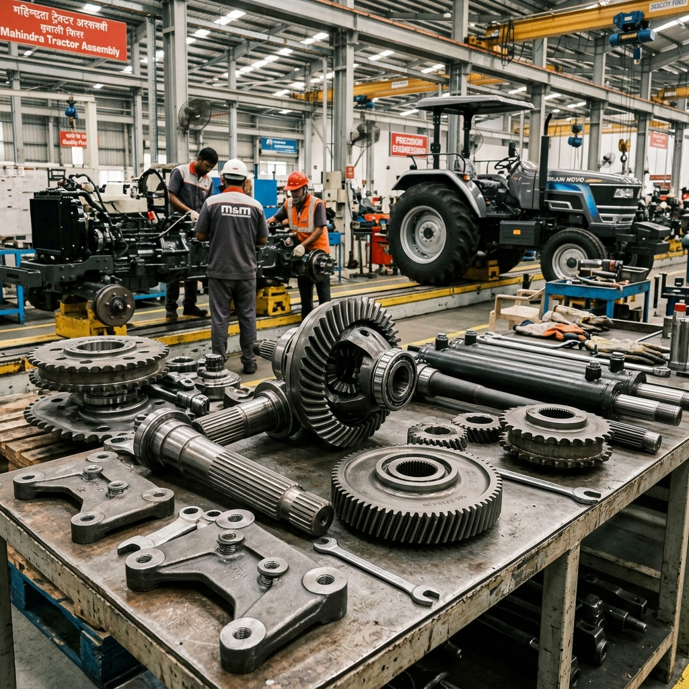

Precision Machining for Agricultural Machinery
Modern agriculture relies on advanced machinery that can perform reliably in tough outdoor environments. Titanium Industries manufactures high-quality machined parts for agricultural equipment, ensuring that tractors, harvesters, and specialized tools operate with maximum efficiency and minimal downtime.
Our expertise in machining robust materials like high-strength steel and alloys allows us to produce components that offer exceptional wear resistance and structural integrity. From gearbox components to precision-aligned shafts, we provide the engineering quality that modern farming demands.
Why Agricultural Durability Matters
Agricultural machinery often operates in dusty, wet, and high-load conditions. Precision-machined parts reduce friction, prevent premature wear, and ensure that equipment remains operational during critical harvesting and planting seasons.
Heavy-Duty Performance
Components engineered to handle the high torque and loads typical of agricultural work.
Wear Resistance
Using advanced materials and heat treatments to prolong component life in abrasive environments.
Reliable Field Work
Our precision ensures that your equipment stays in the field and out of the repair shop.
Key Features of Our Agriculture Service
We provide robust engineering for the backbone of the food industry.
- High-Strength Material Machining.
- Gearbox & Transmission Components.
- Precision Shafts & Bushings.
- Custom Replacement Part Manufacturing.

Our Engineering Process
Step 01
Technical Review
Analyzing operating conditions and stress requirements for the component.
Step 02
Precision Machining
Utilizing high-performance CNC centers for durable and accurate production.
Step 03
Quality Check
Ensuring every part meets structural and dimensional requirements for field use.
Frequently Asked Questions
Yes, we can reverse engineer and manufacture high-quality replacement parts for older agricultural equipment to keep them operational.